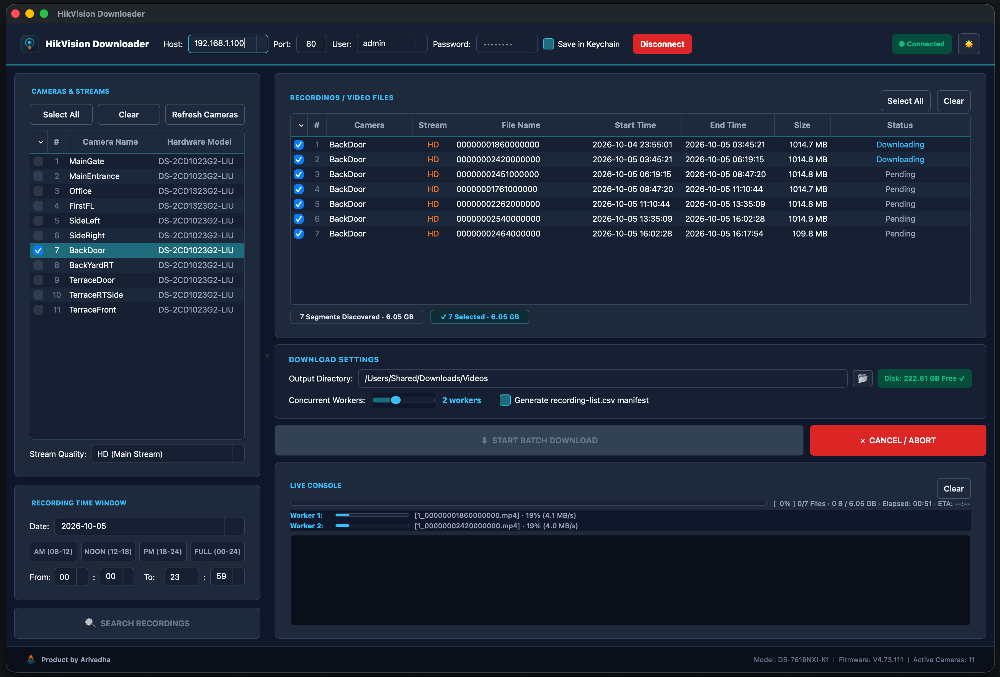
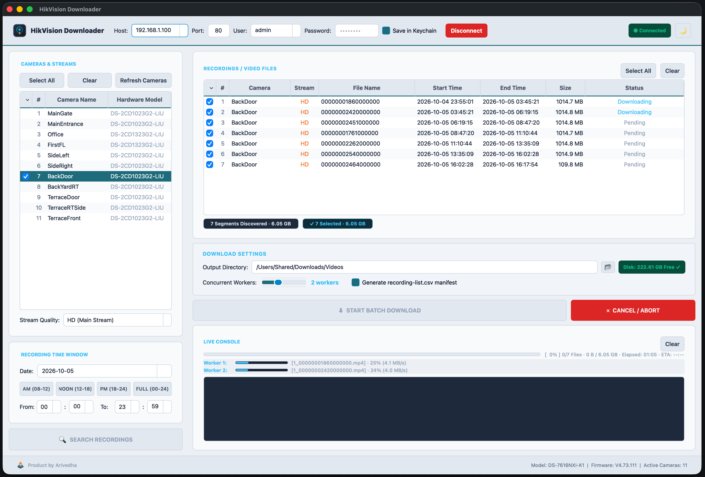

A standalone desktop & CLI application designed to rapidly discover, query, and download surveillance footage from HikVision NVRs and IP cameras with multi-threaded performance and zero-trust OS keychain security.
macOS Gatekeeper automatically flags unsigned open-source applications by default with a security prompt (“Apple could not verify the developer”). To launch the app seamlessly:
/Applications folder.xattr -d com.apple.quarantine "/Applications/HikVision Downloader.app"


Engineered specifically to solve the bottleneck of slow, proprietary CCTV web players with a resilient, concurrent downloading architecture.
Download multiple video segments concurrently across separate worker threads with per-worker speed gauges, bandwidth throttling, and automatic resumption.
Hardware-backed OS Keychain and Windows Credential Manager integration ensures plain-text passwords are never saved on disk or exposed in logs.
Scan local subnets to discover online HikVision devices, verify ISAPI endpoints, and auto-populate active camera channels and recording dates.
Interrogate NVR recording tracks to highlight active dates, filter by time window, and perform seamless MP4 segment aggregation with zero loss.
Rich desktop application powered by PySide6 with custom dark/light themes, paired with a scriptable CLI for automated cron jobs and server pipelines.
Self-contained binaries for macOS (.dmg) and Windows (.exe). No external Python, Qt, or FFmpeg installations required to start downloading.
Run ad-hoc queries, automated cron backups, or batch camera dumps without writing code or launching the graphical UI.
Install via uvx for instant ephemeral execution, or install into your environment using standard pip.